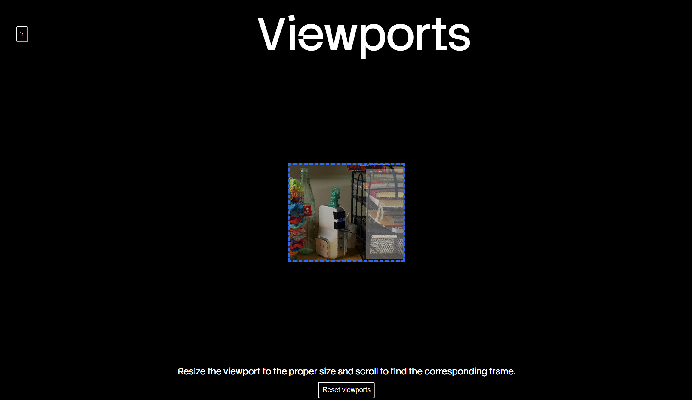
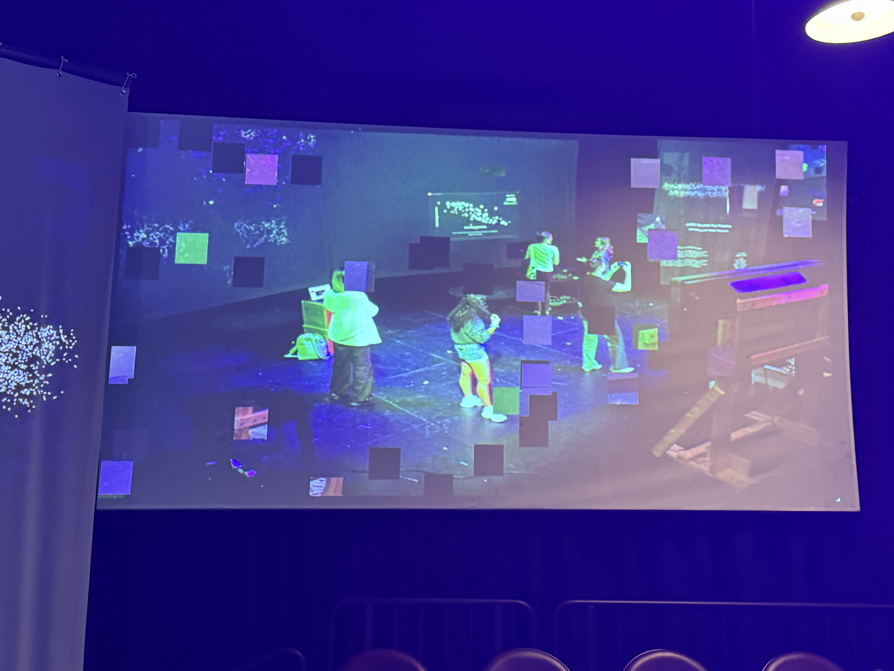

About Me
Hello! My name is Grace and I am a student at the University of North Carolina at Chapel Hill majoring in Computer Science, Communications on the New Media track, and minoring in Creative Writing on the Fiction track. I'll be graduating in 2028. I am passionate about merging storytelling, media creation, and computation together to create user focused digital products. On campus, I am Vice President and co-founder of Black Girls Code at UNC-Chapel Hill, and I am a TA for Girls Who Code at UNC.
Classes
Projects
Viewports - Fall 2025

Viewports is a hyptertext narrative that challenges the user to ask themself if digital display and perception can properly encapsulate intimate information about a person. The user is tasked to explore an anonymous character's desk through manipulating a "viewport" in the center of the screen. As they explore the desk they learn more about the character through the items they keep.
Viewports uses HTML, CSS, and JavaScript. I also earned the Jim Lampley Award for my work on this multimedia project.
Outlier Mirrors - Spring 2026

Outlier Mirrors is a creative exploration into how outliers in datasets can be represented differently, and if alternative methods can bring more emphasis to those outliers, or make them even more obscure. Each floating square is a mirror of the pixels where that square originated in the video feed, and its size, speed, movement behavior, and color tint are determined by attributes of the outlier itself. The data comes from a cardiovascular disease dataset from Kaggle.com
An isolation forest script was used to identify the outliers across multiple variables, and can be found here.
Outlier Mirrors was coded in p5.js originally, and utilizes Python as well.